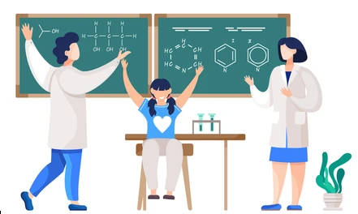

In schools, maintaining proper ventilation in each classroom is imperative. Students suffering from respiratory conditions find it hard to stay in the classrooms for long. On top of that, inadequate ventilation can cause discomfort to the student thereby hindering the learning process. The students are unable to focus in such classrooms.
Bacteria, viruses and many other pathogens breed at places where there is improper air passage. Thus, it impacts the health of the students. So, in order to provide top-notch quality of education to the students, Happy valley school has a large classroom with proper ventilation.
Digital classroom provides teachers the super power to teach students effectively through its rich content. Students learn quickly when taught through embedded technologies and interactive classrooms. They offer students a platform to master all the concepts through 3D animated videos.
When children can see what’s on the screen, they learn more. But being able to see the screen isn’t a given in many schools.But in our school, we have a high quality projectors that can project large, 100″, 16:9 and super-wide, 120″, 16:6 images, offering up to 95 percent more interactive space vs. a 75″ flat panel.
Teachers help children develop warm, supportive relationships, experience enjoyment and excitement about learning, feel comfortable in the classroom.This includes:
Positive climate: The enjoyment and emotional connection that teachers have with students, as well as the nature of peer interactions.
Behavior management:Our teachers monitor, prevent, and redirect misbehavior.
Concept development:Teachers use instructional discussions and activities to promote students’ higher-order thinking skills and cognition in contrast to a focus on rote instruction.

Practical learning allows you to learn quick adaptations needed for daily challenges and scenarios and allows you to get a better understanding of your course topic. That's why we have a lab to teach the concepts to the students not only theoretically but also practically.